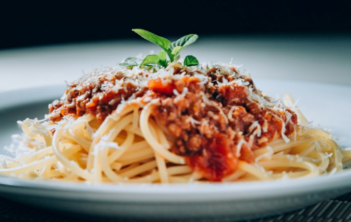

Ingredientes: 2 libras de pescado 3 (2+1) cebollas 4 (2+2) dientes de ajo 2 chiles pimientos 10 tomates aceitunas alcaparras perejil picado al gusto 4 cucharadas de aceite de oliva Prodedimiento: En un sartén caliente aza los 10 tomates, 1 cebolla, 2 dientes de ajo y 2 chiles pimientos. Licúa agregando sal al gusto, toma en cuenta que si estás utilizando pescado seco para hacer a receta ya contiene suficiente sal y no deberás agregar mucha sal a la salsa. Parte las 2 cebollas restantes en rodajas y fríelas con aceite de oliva. Pica 2 ajos finamente y agrégalos a la cebolla. Vierte la salsa a el sofrito de cebolla y deja cocinar unos cuantos minutos.Agrega las aceitunas, alcaparras y perejil picado a la salsa. Deja cocinar por unos minutos.Por último agrega el pescado, cocina por aproximádamente 15 minutos a fuego medio alto y retira del fuego. El pescado es una carne suave y si lo recoces se deshace. El tiempo de cocimiento varía dependiendo del tipo de pescado que utilices. En el caso del pescado seco será menos tiempo porque está precocido.
Ingredientes: Carne Spaghetti 1 cebolla Margarina Consome de res Laurel Tomillo chile pimiento Agua Sal salsa de tomate Unas hojas de albahaca para decorar. Aceite de oliva, sal y pimienta negra recién molida. Preparacion: Se sasona la carne con sal y cosome de res depues se echa el chile pimiento, tomillo y laurel cuando la carne ya este cocida en un tiempo de 15 a 20 minutos se echa la salsa de tomate despues se pone una olla con agua y sal cuando el agua este hirviendo se echa los fideos se dejan minimo 5 minutos y ya despues se escurre los fideos no muy recocidos despues se echa una barra de margarina a un sarten y se revuelven y listo se sirve los fideos y despues se echa la carne y se decora con hojas de oregano al gusto. 